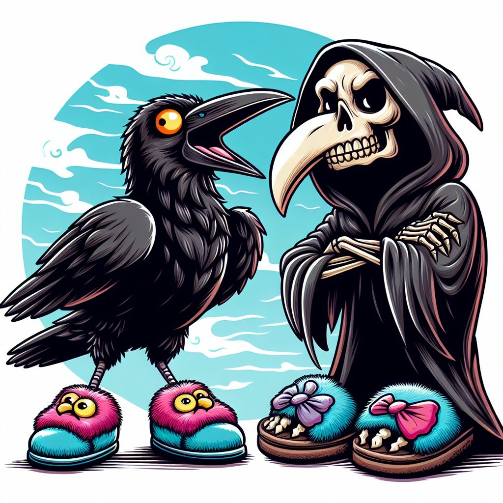

La Cornacchia Seccatrice e la Ciabatta
Alle cinque del mattino una cornacchia – cra cra! – chiamava a gran voce, dove siete amici miei? Non fa in tempo a dare seguito a questi pensieri che la morte la ghermisce, nella forma di una ciabatta scagliata con perizia letale.
Quante volte aveva rotto le palle impunemente? Dai e dai ha avuto quello che si meritava. È un destino dolceamaro: adesso è nel paradiso delle cornacchie, e non soffre più la solitudine.
Infine a chi domanda come possa una ciabatta accoppare una cornacchia basti dire: dipende da molti fattori, ed anche la fortuna gioca un ruolo importante.